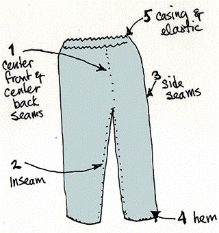

Implementation

SRASS ... much more fun
- Implemented in C on top of the JJParser library
- Uses conventional automated reasoning systems for all tests
- Uses SystemOnTPTP to call component systems
- Uses contextual indirect syntactic relevance ordering
- Parameterized for systems, features, and resource allocations
Conventional Automated Reasoning Components
- A theorem prover to test for (counter)theoremhood and unsatisfiability
- A theorem prover to find proofs
- A finite model builder to build models and test for (counter)satisfiability
- A saturating system to further test for (counter)satisfiability
- Evaluation with respect to a model done by ...
- Representing the model as a set of formulae
- Theorem axiom is true
- Counter satisfiable axiom is not-true
- Counter theorem axiom is false
- Resource intensive, but uses automated reasoning :-)